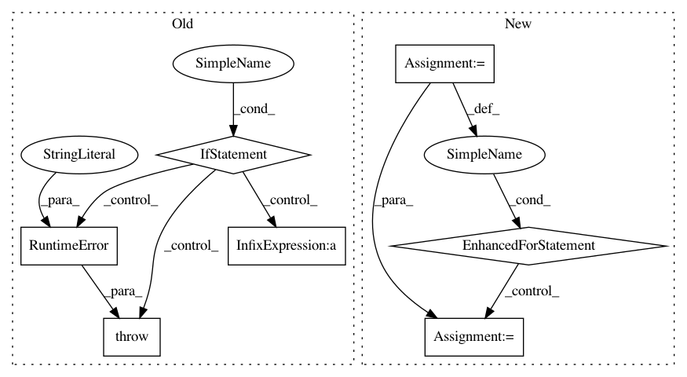

1c758ba9d6c14d9b9d3599e44c3508e2692d8d35,pyprob/distributions/empirical.py,Empirical,expectation,#Empirical#Any#,84
Before Change
return util.fast_np_random_choice(self.values, self._weights_numpy_cumsum)
def expectation(self, func):
if self.length == 0:
raise RuntimeError("Empirical distribution instance is empty.")
if self._uniform_weights:
return util.to_tensor(sum(map(func, self.values)) / self.length)
else:
ret = 0.
for i in range(self.length):
After Change
for i in range(self._length):
ret += util.to_tensor(func(self._shelf[str(i)]), dtype=torch.float64) * self._categorical.probs[i].double()
else:
for i in range(self._length):
ret += util.to_tensor(func(self._values[i]), dtype=torch.float64) * self._categorical.probs[i].double()
return util.to_tensor(ret)
def map(self, func):
self._check_finalized()
In pattern: SUPERPATTERN
Frequency: 3
Non-data size: 7
Instances
Project Name: pyprob/pyprob
Commit Name: 1c758ba9d6c14d9b9d3599e44c3508e2692d8d35
Time: 2018-09-28
Author: atilimgunes.baydin@gmail.com
File Name: pyprob/distributions/empirical.py
Class Name: Empirical
Method Name: expectation
Project Name: kundajelab/dragonn
Commit Name: 9c158b87f5fb2dca1ed95884e667ab2fc218e1b7
Time: 2017-05-01
Author: jisraeli@stanford.edu
File Name: dragonn/models.py
Class Name: SequenceDNN
Method Name: deeplift
Project Name: mne-tools/mne-python
Commit Name: 7c1233ba612bdb08d640c924ef4220b2fe13fb71
Time: 2020-09-25
Author: larson.eric.d@gmail.com
File Name: mne/io/reference.py
Class Name:
Method Name: add_reference_channels